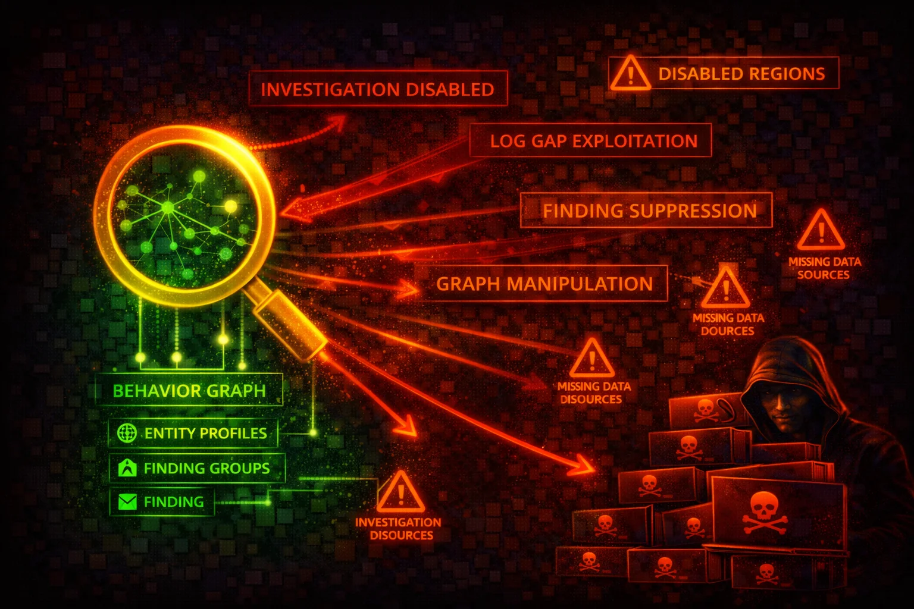

Amazon Detective automatically collects log data from AWS resources and uses machine learning, statistical analysis, and graph theory to build interactive visualizations for security investigations. Attackers target Detective to destroy forensic evidence and remove investigation capabilities.
Detective builds a behavior graph from ingested data using ML and statistical analysis. The graph links entities (IP addresses, IAM principals, AWS accounts) with their activities over time.
An administrator account creates and manages the behavior graph, invites member accounts, and conducts investigations. Member accounts contribute data. Delegated administrator can auto-enable for all org accounts.
Detective is an investigation tool, not a detection tool. Disabling it does not stop alerts (GuardDuty still fires), but it destroys the forensic graph data needed to investigate incidents. Attackers who delete the behavior graph eliminate up to 1 year of correlated investigation data.
aws detective list-graphsaws detective list-members \
--graph-arn arn:aws:detective:us-east-1:111122223333:graph:a1b2c3d4e5f6aws detective list-datasource-packages \
--graph-arn arn:aws:detective:us-east-1:111122223333:graph:a1b2c3d4e5f6aws detective list-investigations \
--graph-arn arn:aws:detective:us-east-1:111122223333:graph:a1b2c3d4e5f6aws detective list-organization-admin-accountsaws detective delete-graph \
--graph-arn arn:aws:detective:us-east-1:111122223333:graph:a1b2c3d4e5f6aws detective delete-members \
--graph-arn arn:aws:detective:us-east-1:111122223333:graph:a1b2c3d4e5f6 \
--account-ids 444455556666 777788889999aws detective disassociate-membership \
--graph-arn arn:aws:detective:us-east-1:111122223333:graph:a1b2c3d4e5f6aws detective disable-organization-admin-accountaws detective update-investigation-state \
--graph-arn arn:aws:detective:us-east-1:111122223333:graph:a1b2c3d4e5f6 \
--investigation-id 123456789012345678901 \
--state ARCHIVED{
"Effect": "Allow",
"Action": "detective:*",
"Resource": "*"
}Full access allows deleting behavior graphs, removing members, and destroying all forensic data
{
"Effect": "Allow",
"Action": [
"detective:Get*",
"detective:List*",
"detective:BatchGet*",
"detective:SearchGraph"
],
"Resource": "*"
}Read-only access for security analysts to investigate findings without modification rights
{
"Effect": "Deny",
"Action": [
"detective:DeleteGraph",
"detective:DeleteMembers",
"detective:DisableOrganizationAdminAccount",
"detective:DisassociateMembership"
],
"Resource": "*"
}Prevents deleting behavior graphs or removing member accounts at the organization level
Centralize Detective management so member accounts cannot disable it or leave the behavior graph.
aws detective enable-organization-admin-account \
--account-id 123456789012Use Service Control Policies to deny Detective destructive actions across all member accounts.
Detective must be enabled per-region. Ensure behavior graphs exist in every active region.
Create EventBridge rules to alert on destructive Detective API calls via CloudTrail.
aws events put-rule --name "DetectiveTamperingAlert" \
--event-pattern '{"source":["aws.detective"],"detail":{"eventName":["DeleteGraph","DeleteMembers"]}}'Ensure new accounts are automatically added to the behavior graph.
aws detective update-organization-configuration \
--graph-arn GRAPH_ARN --auto-enableEnable optional data source packages for maximum investigation coverage (EKS, Security Hub).
aws detective update-datasource-packages \
--graph-arn GRAPH_ARN \
--datasource-packages EKS_AUDIT ASFF_SECURITYHUB_FINDING